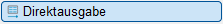
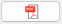
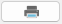
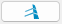
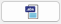
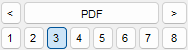
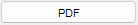
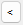

")
")
Direkte Ausgabe der aktuellen Stahlliste mit dem gewählten Stahllistenprofil.
Sie können die Stahlliste mit dem PDF-Drucker eDocPrinter PDF Pro (GLASER) im PDF-Format speichern, die Stahlliste auf einem beliebigen Drucker ausgeben oder in der Zeichnung ablegen.
Ausgabefunktionen
 |
Ausgabe als PDF (nur mit eDocPrinter PDF Pro verfügbar). |
 |
Ausgabe auf einem beliebigen zu wählenden Drucker. |
 |
Ausgabe auf der Zeichnung. |
 |
Ausgabe als ABS-Datei im BVBS 3.1-Format (nur Biegeliste). |
Auswahl eines Stahllistenprofils
In der Profilauswahl stehen die Profile zur Verfügung, die im Stahllisten-Dialog im Unterdialog Grundwerte Allgemein definiert sind; [Option | Neu erzeugen | Allgemein → Profil]. Siehe: Grundwerte Allgemein. Sie können für jede Ausgabefunktion ein gesondertes Stahllistenprofil auswählen. Das zuletzt gewählte Profil wird sich für die Direktausgabe gemerkt.
 |
·Durch einen Klick auf den Profilnamen

wird eine Auswahlliste geöffnet, in der Sie ein Profil durch Anklicken auswählen können.·Mit den Schaltflächen 
·Jedem Profil ist eine Ziffer zugeordnet. Klicken Sie eine Ziffer an, wird der entsprechende Profilname angezeigt.
Stahlliste mit dem PDF-Drucker eDocPrinter PDF Pro GLASER ausgeben
Der PDF-Drucker eDocPrinter PDF Pro GLASER muss für diese Funktion eingerichtet sein. Die PDF-Datei wird anhand der Voreinstellungen im Dialog PDF-Parameter erzeugt.
§Klicken Sie auf die Schaltfläche .
§Wählen Sie das Stahllistenprofil für die Ausgabe aus.
§Klicken Sie auf Direktausgabe.
§Je nachdem, welche Einstellungen Sie im Dialog Druckparameter vorgenommen haben, wird die PDF-Datei direkt erzeugt oder es werden der Speicherort und der Dateiname abgefragt.
§Geben Sie unter Speichern in: den Speicherort an.
§Bearbeiten Sie bei Bedarf den vorgeschlagenen Dateinamen.
§Klicken Sie abschließend auf Speichern, um die PDF-Datei zu erstellen.
|
Hinweis: |
|
Falls der PDF-Drucker eDocPrinter PDF Pro GLASER nicht eingerichtet ist, wird der eDocPrinter PDF Pro verwendet. Ist dieser nicht installiert, dann ist die PDF-Ausgabe nicht verfügbar. |

Stahlliste auf einem beliebigen Drucker ausgeben
§Klicken Sie auf die Schaltfläche .
§Wählen Sie das Stahllistenprofil für die Ausgabe aus.
§Klicken Sie auf Direktausgabe.
Öffnet den Dialog Druckerparameter.
Drucker
Exemplare
Ausgabe in Datei Es wird eine Plotdatei (*.PLT) geschrieben. Im Dialog Datei speichern können Sie einen Ordner wählen und den Dateinamen eingeben. Wenn Sie auf Speichern klicken, wird die Datei geschrieben und der Dialog geschlossen. Eigenschaften Öffnet die Druckereinstellungen des gewählten Druckers. Weiter Die Stahlliste wird mit den gewählten Parametern gedruckt oder es folgt der Dialog Speichern unter zur Angabe des Speicherorts und des Dateinamens für die PDF-Ausgabe. Abbrechen Bricht die Aktion ab und schließt den Dialog. |

Stahlliste in der Zeichnung ablegen
§Klicken Sie auf die Schaltfläche .
§Wählen Sie das Stahllistenprofil für die Ausgabe aus.
§Klicken Sie auf Direktausgabe.
§Führen Sie einen der folgenden Schritte aus:
a)Wenn eine Stahlliste bereits in der Zeichnung enthalten, können Sie sie ersetzen, beibehalten oder den Vorgang abbrechen.
-Ja: Die in der Zeichnung abgelegte Stahlliste wird ersetzt. Mit einem Linksklick können Sie die Stahlliste an eine neue Position setzen. Mit einem Rechtsklick wird der Einfügepunkt (links unten) der aktuell abgesetzten Stahlliste übernommen.
-Nein: Um die in der Zeichnung abgelegte Stahlliste beizubehalten, klicken Sie auf Nein. Legen Sie die neue Stahlliste mit einem Linksklick auf der Zeichnung ab.
-Abbrechen: Der Vorgang wird abgebrochen.
b)Platzieren Sie die Stahlliste auf der Zeichenoberfläche mit einem Linksklick. [Lage der Zeichnung].
Biegeliste als ABS-Datei ausgeben
§Klicken Sie auf die Schaltfläche .
§Klicken Sie auf Direktausgabe.
Öffnet den Dialog Speichern unter.
§Wählen Sie das Verzeichnis, in dem die Datei gespeichert werden soll.
§Bearbeiten Sie bei Bedarf den vorgeschlagenen Dateinamen.
§Klicken Sie abschließend auf Speichern, um die ABS-Datei zu erstellen.
Siehe auch: